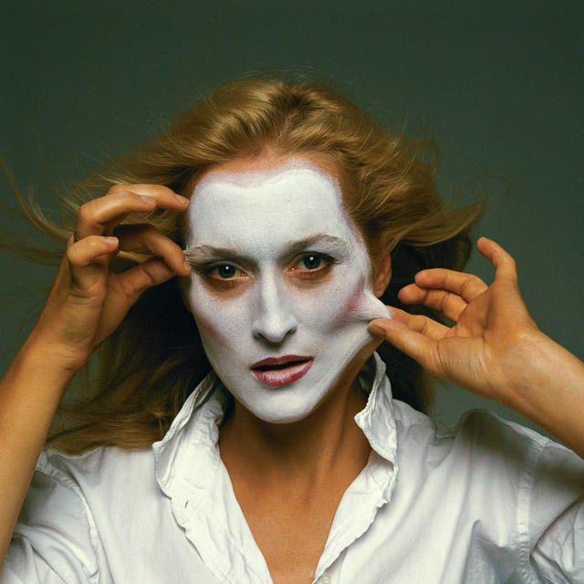
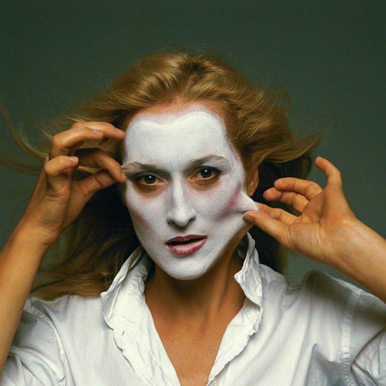
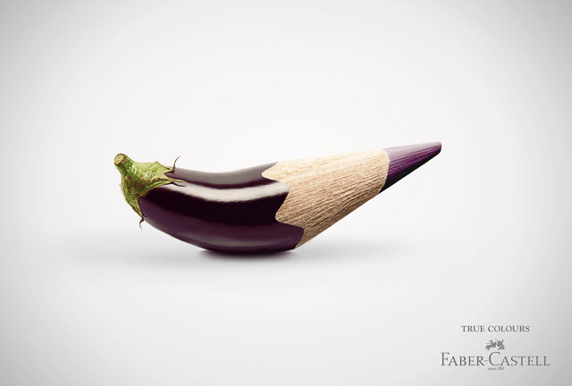
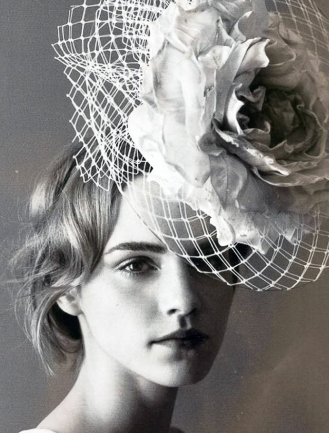
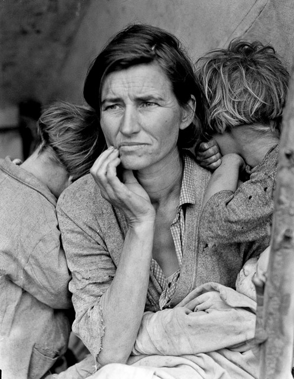
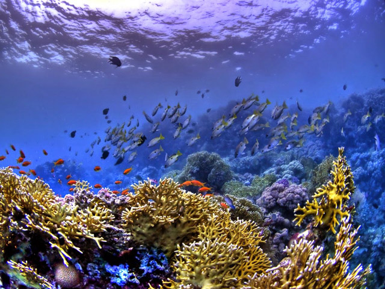
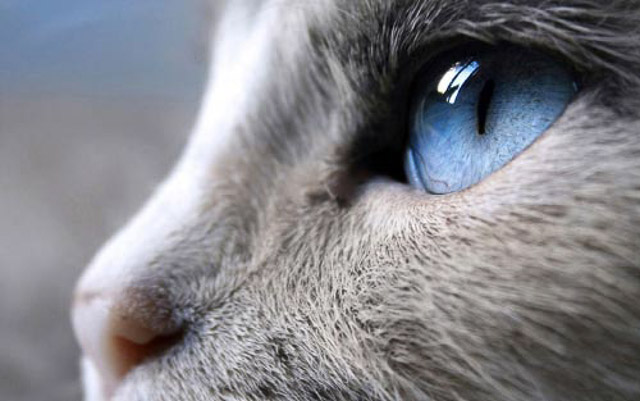

La fotografía artística tiene un carácter muy subjetivo y la manipulación de las imágenes se ha convertido en algo indispensable para la expresión artística.

La fotografía publicitaria es uno de los tipos de fotografía más conocidos. Busca ser una imagen atractiva para el consumidor, siendo influyente en las ideas tanto políticas como sociales de la gente.Empezó a formar parte de la publicidad a partir de 1920 y desde entonces se ha convertido en un elemento clave.

Con el paso del tiempo, la fotografía de moda ha desarrollado su propia estética donde en la imagen no prima solo la ropa, sino el maquillaje, el peinado, los accesorios y escenarios elegidos por el fotógrafo para crear una fotografía única.

A través de la fotografía documental se busca registrar e informar de distintos aspectos de la vida, formas y condiciones. Constituye una evidencia de la realidad. Este tipo de fotografía no se limita solo a los humanos, sino que puede tratar también sobre animales, naturaleza… Nace en los años 80-90 con Jacob Risk y Lewis W. Hine.

Es un tipo de fotografía bastante costoso, por un lado debido a la práctica de submarinismo para llevarla a cabo y por otro la compra del material fotográfico. Algo a tener en cuenta en la fotografía submarina es el color dependiendo de la inmersión: a 3 metros el rojo es pardo, los naranjas son amarillos y a partir de 15 metros todo es azul.

Con esta fotografía podemos acercarnos tanto a los objetos y sujetos cotidianos que descubriremos multitud de detalles ajenos a nosotros hasta el momento en el que tomamos la foto.
Consiste en tomar fotos de los objetos acercándose tanto que el tamaño del objeto en la película o en el sensor sea igual o superior al que tenga en la vida real. Podremos realizar este tipo de fotografía con el sensor macro.